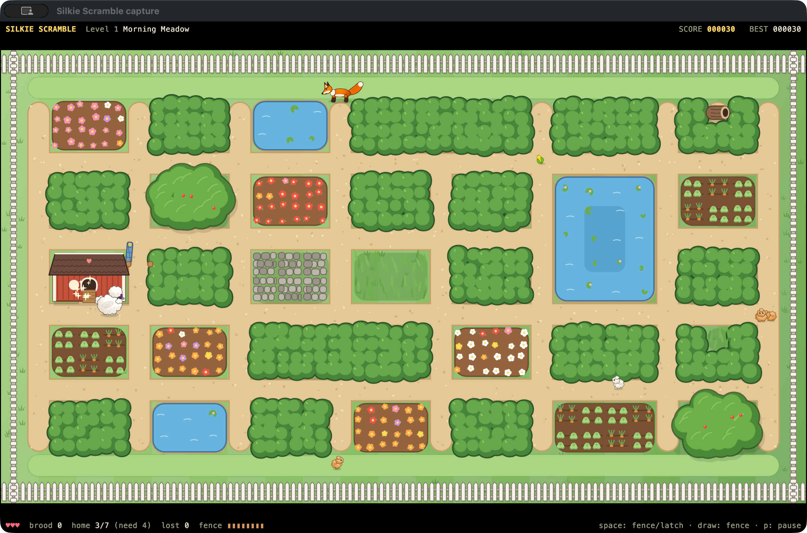
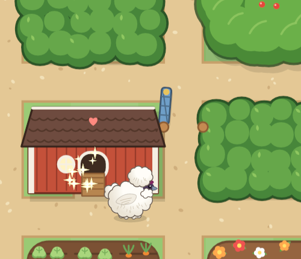
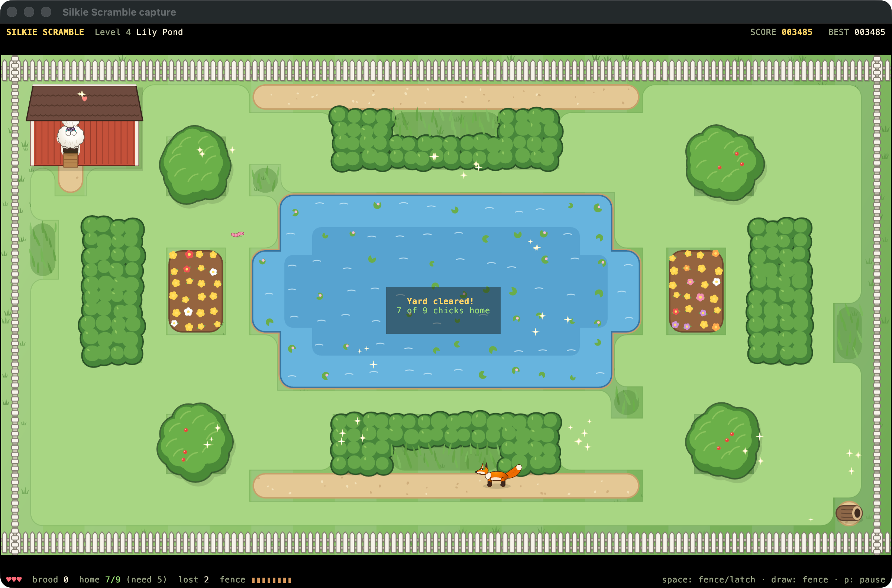
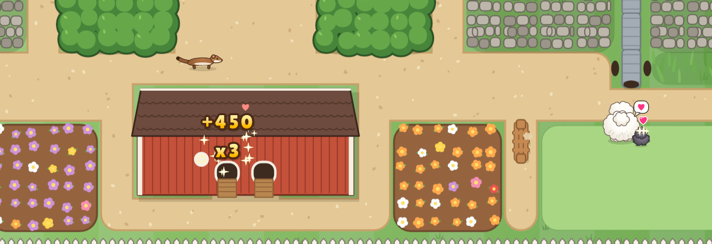

Round them up.
Walk into a chick to gather it. Your brood follows in a wobbly procession, cutting corners, bumping into each other, and sometimes wandering off after a butterfly.
A garden chase. In your terminal.
You’re a fluffy Silkie hen with a scattered brood and a fox on your tail. Gather the chicks, weave through the garden, and bring them home to the coop.
Play in Silkie or kitty terminal. This page is your guide; the game runs in your terminal.

See the flock in motion
Watch the built-in autopilot gather chicks and bring them home in Morning Meadow. This is a recording of the game running in Silkie, with the same rules and controls you play with.
Download HDR video · Download standard video
The screenshots preserve the game’s HDR highlights. Look for the white-hot centres of the sparkles by the coop: the close-up shows the same captured pixels at a larger size.
HDR brightness needs an HDR-capable display and browser, with HDR enabled. On other screens the images may be tone-mapped to standard brightness. PNG fallbacks are provided for browsers without AVIF support.


01 / The daily chicken run
Silkie Scramble is a maze-chase arcade game written in Rust. Its garden of hedges, gates, flower beds, and vegetable patches is rendered with graphics inside a text terminal.
Walk into a chick to gather it. Your brood follows in a wobbly procession, cutting corners, bumping into each other, and sometimes wandering off after a butterfly.
Steer around predators, time your passage through gates, and put up temporary fences. Keep an eye on the stragglers: a long, noisy brood attracts foxes from farther away.
Lead the chicks to the coop door and they hop inside. Delivering more together earns more per chick: one scores 100 points, three score 450, and six score 1,350.
Small safe trips or one big brood? That’s the gamble. A level ends when every chick is home or gone. Save at least half to advance; quick runs and a perfect brood earn bonuses.
02 / A little help from your tablet
Using Silkie terminal with a compatible pen tablet or touchscreen? Draw directly across a garden path with your stylus, or with your finger on a touchscreen. Your stroke becomes a temporary fence that blocks the fox’s route and sends it the long way around.

While playing in Silkie, aim at an unoccupied stretch of path between the fox and your flock. Leave a way for the hen and chicks to reach the coop.
Put your pen down and drag, or touch and drag on a supported touchscreen. With Silkie’s pen-ink support, the terminal draws the live stroke immediately, even when the game runs over SSH.
Lift the pen or finger to finish. Valid parts of the stroke become fence tiles. Use the detour to lead your brood to safety before the fence breaks down.
03 / Trouble in the garden
Hedges hide you from a fox’s view, but your peeping brood can give you away. Watch the warning signs and keep your escape route open.
It patrols, listens, and follows its nose. A “!” gives you a moment’s warning before it charges. If it grabs a chick, catch it before it reaches its den to make it drop the chick. Later foxes anticipate your route and work together.
It slips through drainpipes and targets lone chicks. It won’t chase the hen, and it bolts when you approach. Stay close to your stragglers.
Its shadow warns you two seconds before it swoops. Tall grass and the shade of a tree protect the chicks; open lawns leave them exposed.
04 / Choose your terminal
To play, use Silkie or kitty. The game requires the kitty graphics protocol to display its garden and sprites. An ordinary text-only terminal won’t work. The rules, speed, scoring, and difficulty are the same in both supported terminals.
The enhanced experience
Silkie is a fork of kitty with extra graphics, input, and timing protocols. The game detects and uses the extensions your terminal supports.
The full game
kitty is fully supported. You get the same flock to rescue, the same predators to outsmart, and the same six gardens to explore.
The differences are in presentation and input. Both terminals play the same game, including all levels, predators, fence rules, scoring, and difficulty.
| Feature | Silkie | kitty |
|---|---|---|
| Garden graphics | The terminal draws a retained vector garden. Gates and fences update with small patches, and resizing does not require a new garden bitmap. | The game renders the garden as a bitmap and uploads it per level and size step. Gates and fences use sprite placements. |
| Title lettering | Vector lettering stays crisp as it scales. | Bitmap lettering. |
| Animated sprites | Uploaded once and animated by moving placements, just as in kitty. | Uploaded once and animated by moving placements. |
| Drawing fences | Mouse, pen tablet, or supported touchscreen. With pen-ink support, the terminal draws the live stroke without waiting for a round trip to the game. | Mouse drawing, with a trail of dots drawn by the game. The finished fence follows the same rules. |
| Frame pacing | Uses the terminal’s presentation reports to match displayed frames and prevent queued frames from piling up on a slow connection. | Uses a timer to pace frames. |
| Input latency | Enables low-latency mode during play. | Normal terminal input handling. |
| Menus | Translucent panels over the garden. | Opaque panels. |
| Drawing pointer | A little wooden stake when image pointers are supported. | A crosshair. |
| Touch feedback | Trackpad haptics for gathering chicks, bringing them home, gates, and fences on supported hardware. | No game haptic feedback. |
| Colour and highlights | Wide-gamut sprites on Display P3 screens; HDR glints on sparkles, stars, and hearts when supported and Silkie’s hdr setting is auto or always. | sRGB colour without the Silkie HDR effects. |
| Display awareness | Uses display reports for refresh rate, pixel scale, and e-ink awareness. | No Silkie display-protocol enhancements. |
| Playing over SSH | The vector garden needs less data, terminal-side pen ink stays responsive, and frame pacing adapts to the connection. | Fully playable over SSH; garden bitmaps can take a moment to arrive on a slow link. |
Silkie enhancements depend on the capabilities reported by the terminal, your hardware, and enabled settings. The game detects support at startup. Launch with --kitty-only in Silkie to compare the kitty presentation.
Install stable Rust 1.85 or newer and Cargo. Download or clone this project, open its silkie-scramble directory in Silkie or kitty, then run:
cargo build --release
./target/release/silkie-scrambleAlternatively, cargo install --path . installs the silkie-scramble command on your path.
A large terminal window with a small font gives the garden more pixels. Run directly in the terminal: tmux and screen require graphics passthrough that the game does not set up.
The game also works over SSH. To inspect the capabilities your terminal reports, run:
./target/release/silkie-scramble --reportIn Silkie, add --kitty-only when launching to try the kitty presentation.
05 / Keep these under your wing
The hen keeps moving until she can turn in the direction you’ve asked for. Plan ahead at corners and leave enough room for the tail of your brood.
Timed gates raise a red flag before closing. Blue latched gates open or close when you press Space nearby, or click or tap the gate while the hen is next to it.
| Input | Action |
|---|---|
| Arrow keys / WASD / HJKL | Move the hen. |
| Space | Work a nearby latched gate, or drop a fence behind you. |
| Mouse drag | Draw a fence in either terminal. |
| Pen / touchscreen drag | Draw a fence in Silkie with supported input. |
| Right-click | Cancel the fence you’re drawing. |
| P / Esc | Open the pause menu. |
| F2 / ` | Toggle diagnostics. |
| Ctrl + Z | Suspend; use fg in the shell to resume. |
| Ctrl + C | Quit. |